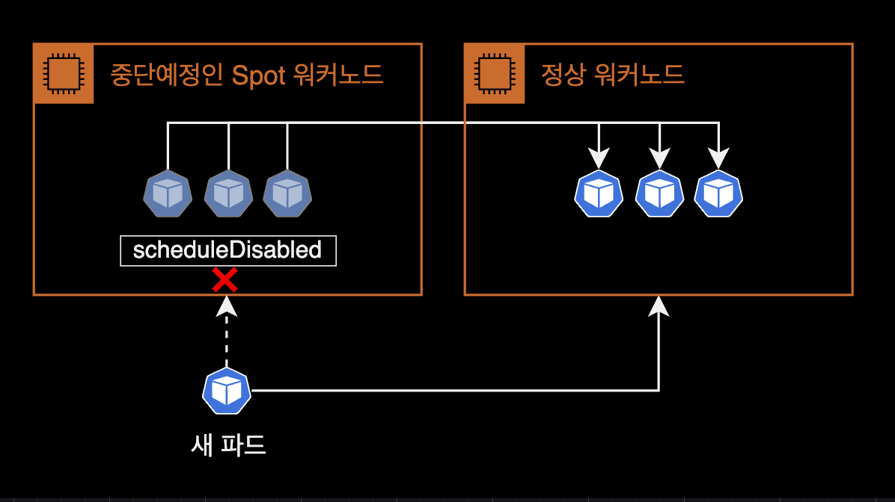
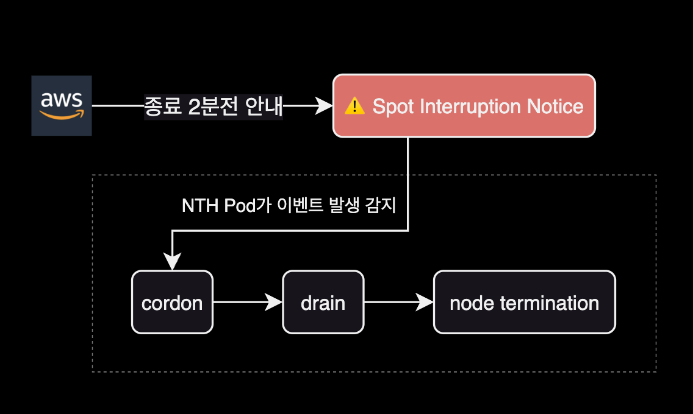
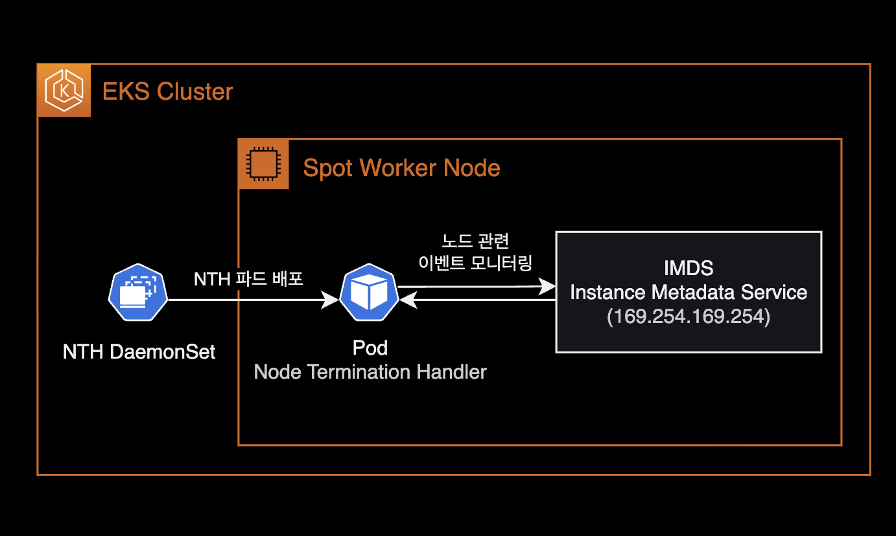
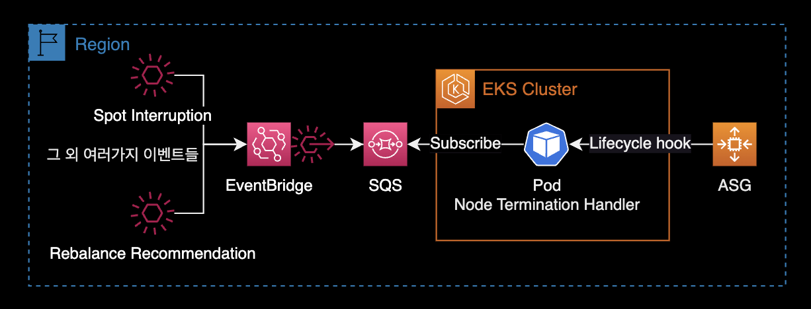
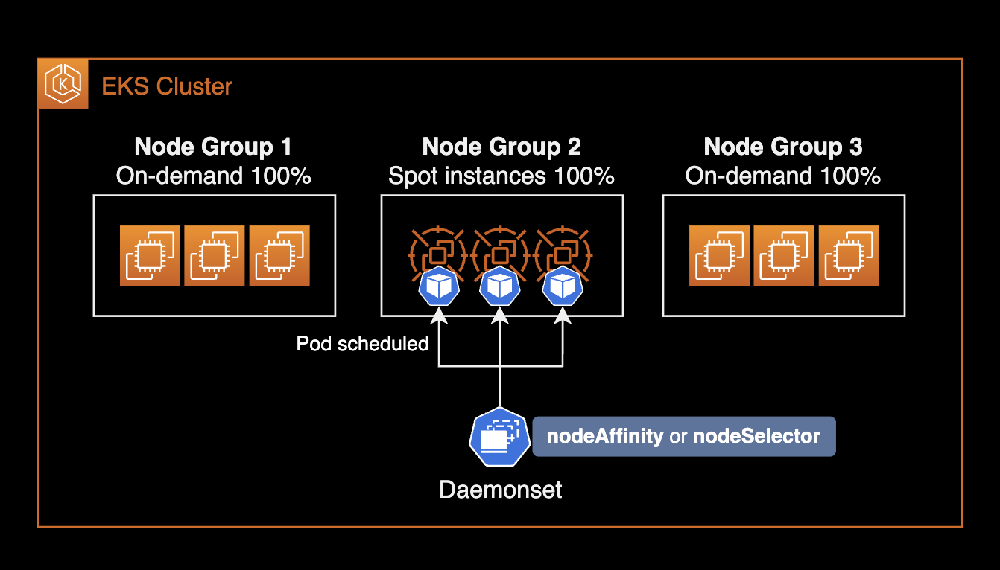
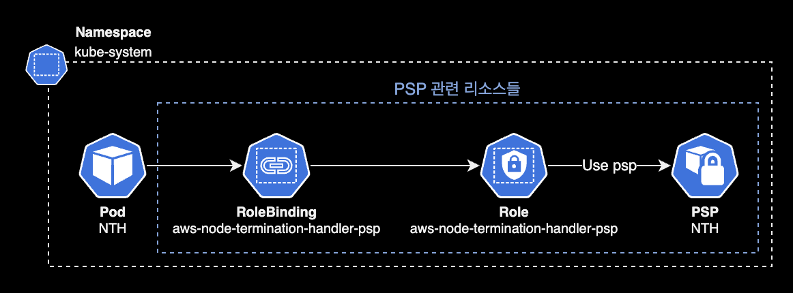
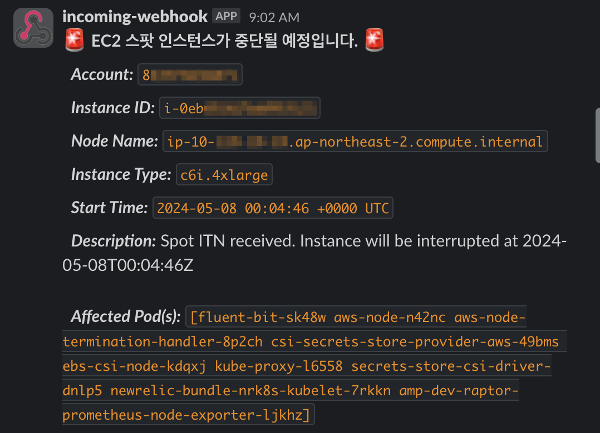
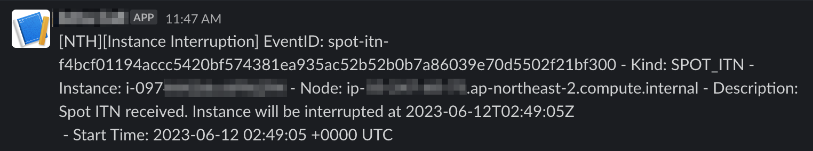
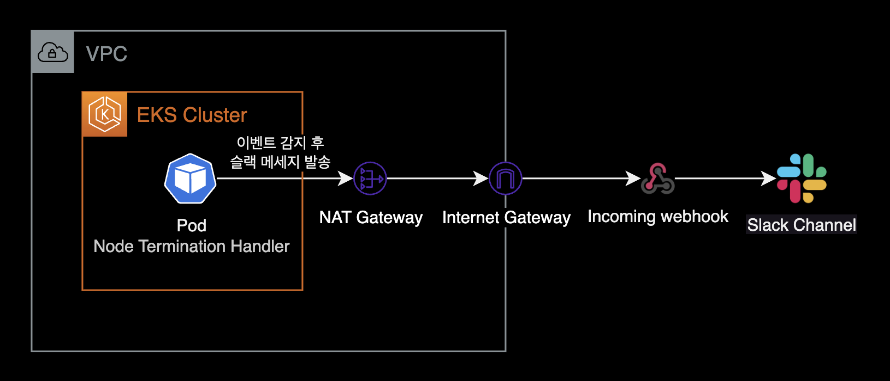

NTH
개요
이 글은 다음 주제들을 다룹니다.
- Node Termination Handler(이하 NTH)의 동작방식과 주요 기능을 설명합니다.
- 헬름 차트를 사용해서 Node Termination Handler를 설치하고 운영하는 방법을 소개합니다.
쿠버네티스 클러스터와 AWS 인프라를 운영하는 SRE 또는 DevOps Engineer를 대상으로 작성되었습니다.
배경지식
EKS 스팟 워커노드 사용시 주의사항
스팟 인스턴스를 EKS에 적용하면 비용 절감과 확장성을 향상시킬 수 있지만, 언제든 종료될 수 있다는 점을 명심해야 합니다.
EKS 워커 노드에 스팟 인스턴스를 적용하기 위해서는 몇 가지 고려해야 할 사항들이 있습니다. 먼저 스팟 인스턴스가 종료된다는 스팟 인스턴스 인터럽션 안내ITN을 처리할 수 있어야 합니다.
AWS EC2는 스팟 인스턴스 종료 2분 전에 해당 인스턴스에 대한 인터럽션 안내 이벤트를 발생합니다.
EKS 환경에서 스팟 인스턴스 인터럽션을 처리할 때 필요한 대응 조치는 다음과 같습니다.

- cordon : 해당 워커 노드에 더 이상 파드들이 스케쥴링되지 않도록 막는 설정해야 합니다. 어차피 2분 후 해당 스팟 인스턴스는 Terminate 될 예정이기 때문입니다.
- drain : 동작 중인 파드들을 다른 워커노드로 옮겨서 재배치 해야합니다.
스팟 인스턴스 인터럽션 안내ITN에 대응하지 않으면 애플리케이션 코드가 정상적으로 중지되지 않거나, 이미 중단 예정인 워커노드에 새 파드를 실수로 스케줄링 할 수 있습니다.
그렇다고 이 스팟 인스턴스 인터럽션 안내ITN에 대한 대응 작업을 EKS 클러스터 관리자가 일일히 매번 진행하는 건 현실적으로 불가능합니다.
그래서 만들어진 쿠버네티스 컨트롤러가 Node Termination Handler 입니다.

NTH는 스팟 인스턴스 인터럽션 안내 이벤트를 감지한 후 자동으로 해당 스팟 노드를 스케줄링 제외한 후, 올라가있는 노드를 다른 노드로 재배치(drain)합니다.
NTH를 사용하면 스팟 인스턴스로 비용을 절약하면서 동시에 (온디맨드 만큼은 아니지만) 스팟의 치명적 단점인 언제든 종료될 수 있다는 불안정성을 낮출 수 있습니다.
Node Termination Handler의 동작방식
aws-node-termination-handler(NTH)는 2가지 모드 중 하나로 동작합니다.
두 모드(IMDS 및 대기열 프로세서) 모두 EC2 인스턴스에 영향을 미치는 이벤트를 모니터링하지만 각각 다른 유형의 이벤트를 지원합니다.
| Feature | IMDS Processor | Queue Processor |
|---|---|---|
| Spot Instance Termination Notifications (ITN) | ✅ | ✅ |
| Scheduled Events | ✅ | ✅ |
| Instance Rebalance Recommendation | ✅ | ✅ |
| AZ Rebalance Recommendation | ❌ | ✅ |
| ASG Termination Lifecycle Hooks | ❌ | ✅ |
| Instance State Change Events | ❌ | ✅ |
좀 더 다양한 노드 관련 이벤트를 자동 대응하고 싶다면, Queue Processor 모드로 NTH를 구성하는 걸 추천합니다.
대신 IMDS 모드보다 Queue Processor 모드의 설치 과정이 복잡합니다.
Node Termination Handler의 설치방식
IMDS 모드와 Queue Processor 모드는 NTH 파드가 배포되는 방식과 구성이 다릅니다.
IMDS (Instance Metadata Service) 모드

- Daemonset 형태로 NTH Pod가 배포됩니다.
- NTH Pod는 EC2 내부에서 IMDS와 통신하며
spot/,events/와 같은 인스턴스 메타데이터를 상시 모니터링합니다. - 헬름 차트만 배포하면 바로 NTH가 모든 스팟 워커노드에서 동작하므로 Queue Processor 모드에 비해 설치가 쉽습니다.
- NTH 파드에 IAM Role(IRSA) 연결 작업이 필요 없으므로 구성이 단순합니다.
Queue Processor 모드

- Deployment 형태로 NTH Pod가 배포됩니다.
- 추가 인프라 설정이 필요합니다. 추가적인 인프라로는 IAM Role (IRSA), EventBridge Rule, SQS가 해당됩니다.
- 설치 방법이 IMDS 모드에 비해 복잡합니다.
환경
로컬 환경
- helm v3.12.0
- kubectl v1.27.2
쿠버네티스 환경
- EKS v1.25
- Node Termination Handler v1.19.0 (차트 버전 v0.21.0)
설치하기
헬름 차트를 사용해서 NTH를 IMDS 모드로 설치하는 게 목표입니다.
차트 다운로드
AWS NTH 공식 깃허브 저장소를 다운로드 받습니다.
$ git clone https://github.com/aws/aws-node-termination-handler.git
참고로 NTH 공식 깃허브 레포지터리 안에 헬름 차트도 포함되어 있습니다.
NTH 레포지터리 내부에 위치한 헬름 차트 경로로 이동합니다.
$ cd aws-node-termination-handler/config/helm/aws-node-termination-handler
$ pwd
/Users/younsung.lee/github/aws-node-termination-handler/config/helm/aws-node-termination-handler
차트 디렉토리 config/helm/aws-node-termination-handler의 내부 구조는 다음과 같습니다.
$ tree .
.
├── Chart.yaml
├── README.md
├── example-values-imds-linux.yaml
├── example-values-imds-windows.yaml
├── example-values-queue.yaml
├── templates
│ ├── NOTES.txt
│ ├── _helpers.tpl
│ ├── clusterrole.yaml
│ ├── clusterrolebinding.yaml
│ ├── daemonset.linux.yaml
│ ├── daemonset.windows.yaml
│ ├── deployment.yaml
│ ├── pdb.yaml
│ ├── podmonitor.yaml
│ ├── psp.yaml
│ ├── service.yaml
│ ├── serviceaccount.yaml
│ └── servicemonitor.yaml
└── values.yaml
2 directories, 19 files
차트 수정
헬름차트의 values.yaml을 수정합니다.
저희는 values.yaml 파일에서 크게 3가지 설정을 수정할 예정입니다.
- 배포대상 지정 : nodeSelector 또는 nodeAffinity를 사용해서 NTH를 특정 노드그룹에만 배포하여 클러스터의 전체 리소스를 절약합니다.
- 리소스 제한 : NTH 데몬셋 파드의 리소스의 요청값, 제한값을 설정하여 클러스터 전체 리소스를 절약합니다.
- webhookURL : NTH가 이벤트 처리후 알림 메세지를 발송할 Slack incoming webhook의 URL 주소
daemonsetNodeSelector
스팟 인스턴스 타입을 사용하는 워커노드에만 NTH 파드를 배포하도록 daemonsetNodeSelector를 지정합니다.
# values.yaml
daemonsetNodeSelector:
# 데몬셋이 NTH 파드를 배포할 기준 설정
eks.amazonaws.com/capacityType: SPOT
데몬셋의 배포 대상을 제한하지 않을 경우 On-demand를 포함한 모든 워커노드에 NTH 파드가 배포되어 불필요한 리소스를 차지하게 됩니다.
nodeAffinity
더 복잡한 노드 선택 조건을 지정하려면 nodeSelector 보다는 nodeAffinity 방식을 사용해야 합니다.

특정 노드그룹에만 NTH 데몬셋 파드를 배포하고 싶은 경우, 노드그룹 이름을 기준으로 nodeAffinity를 설정합니다.
values.yaml에 nodeAffinity를 적용한 예시는 다음과 같습니다.
# values.yaml
daemonsetAffinity:
nodeAffinity:
requiredDuringSchedulingIgnoredDuringExecution:
nodeSelectorTerms:
- matchExpressions:
- key: "eks.amazonaws.com/compute-type"
operator: NotIn
values:
- fargate
- key: node.kubernetes.io/name
operator: In
values:
- hpc-spot
- data-batch-spot
matchExpressions에 2가지 조건이 있는 경우 AND 조건으로 동작합니다. 따라서 위 설정의 경우 2가지 조건을 모두 충족한 노드에만 NTH 데몬셋 파드가 배포됩니다.
- Fargate 타입이 아닌 On-demand 또는 Spot 인스턴스인 경우
- 노드그룹 이름이
hpc-spot또는data-batch-spot에 속해있는 워커노드인 경우
파드 리소스 제한
Node Termination Handler 공식 헬름차트에는 리소스 요청값 제한값이 기본적으로 걸려있지 않습니다.
데몬셋에 의해 각 노드마다 배치되는 데몬셋 파드의 리소스 초기 요청량(requests)과 최대 제한값(limits)을 지정합니다.
기본적으로 데몬셋 파드는 백엔드나 프론트엔드 어플리케이션 파드와 달리 큰 리소스가 필요 없습니다. 제 경우는 아래와 같이 적은 리소스를 할당해도 전혀 동작에 문제가 없었습니다.
values.yaml 파일에 다음과 같은 리소스 요청량 제한량 설정을 추가합니다.
# values.yaml
resources:
requests:
cpu: 10m
memory: 40Mi
limits:
cpu: 100m
memory: 100Mi
PSP 사용여부
Kubernetes v1.25 부터는 PSPPod Security Policy가 지원되지 않습니다. 따라서 EKS v1.25 이상인 경우는 rbac.pspEnabled를 false 처리합니다.
NTH 차트에서 설정 예시입니다.
# aws-node-termination-handle/values_ENV.yaml
...
rbac:
create: true
+ pspEnabled: true
- pspEnabled: false
rbac.pspEnabled 값이 false인 경우 아래 쿠버네티스 리소스들을 생성되지 않게 명시적으로 지정합니다. 이는 NTH 차트의 일부인 psp.yaml 헬름 템플릿에 포함되어 있는 로직입니다.
- PSP용 Role
- PSP용 RoleBinding
- PSP
NTH 파드가 PSP를 사용하던 쿠버네티스 리소스 관계도는 다음과 같습니다.

webhookURL (선택사항)
NTH 파드가 cordon & drain 조치를 할 때마다 슬랙 채널로 알람이 갈 수 있게 슬랙의 Incoming webhook URL을 입력합니다.
Slack의 Incoming webhook 설정 방법은 이 글의 주제를 벗어나므로 설명은 생략하겠습니다.
# values.yaml
# webhookURL if specified, posts event data to URL upon instance interruption action.
webhookURL: "https://hooks.slack.com/services/XXXXXXXXX/XXXXXXXXXXX/XXXXXXXXXXXXXXXXYYYZZZZZ"
만약 NTH의 이벤트 핸들링에 대한 슬랙 알람을 받을 필요 없다면 webhookURL은 기본값으로 비워두도록 합니다.
# values.yaml
# webhookURL if specified, posts event data to URL upon instance interruption action.
webhookURL: ""
webhookTemplate (선택사항)
헬름차트의 webhookTemplates 값을 수정하면 Node Termination Handler 파드가 보내는 슬랙 알람 메세지 템플릿을 커스터마이징 할 수 있습니다.
webhookTemplate 설정을 보기 편하게 줄바꿈을 적용해야할 경우, YAML에서 지원하는 Folded Scalar>를 사용해서 아래와 같이 설정합니다.
# values.yaml
# webhookTemplate if specified, replaces the default webhook message template.
webhookTemplate: >
{
"text": ":rotating_light: *EC2 스팟 인스턴스가 중단될 예정입니다.* :rotating_light:\n
*_Account:_* `{{ .AccountId }}`\n
*_Instance ID:_* `{{ .InstanceID }}`\n
*_Node Name:_* `{{ .NodeName }}`\n
*_Instance Type:_* `{{ .InstanceType }}`\n
*_Start Time:_* `{{ .StartTime }}`\n
*_Description:_* {{ .Description }}\n
*_Affected Pod(s):_* `{{ .Pods }}`"
}

webhookTemplate 설정 외에도 별도의 ConfigMap(또는 Secret) 리소스에 슬랙 템플릿 정보를 저장한 후, 불러오는 방법도 있습니다.
기본값으로 아무것도 선언하지 않은 webhookTemplate은 다음과 같습니다.
# values.yaml
webhookTemplate: "\{\"Content\":\"[NTH][Instance Interruption] InstanceId: \{\{ \.InstanceID \}\} - InstanceType: \{\{ \.InstanceType \}\} - Kind: \{\{ \.Kind \}\} - Start Time: \{\{ \.StartTime \}\}\"\}"

자세한 사항은 NTH 깃허브에서 End to End 테스트 코드를 확인하도록 합니다.
일반적인 네트워크 구성의 경우, Slack 알람을 받으려면 NTH Pod가 위치한 노드가 NAT Gateway를 경유해 Internet의 슬랙에 도달 가능한 네트워크 구성이어야 합니다.

슬랙 채널로 이벤트 핸들링 알람을 보내는 주체는 NTH Pod입니다.
헬름으로 NTH 설치
로컬에 받은 헬름차트를 사용해서 NTH를 설치합니다.
NTH는 시스템 기본 네임스페이스인 kube-system에 설치하는 걸 권장합니다.
$ CHART_VERSION=0.21.0
$ helm upgrade \
--install \
--namespace kube-system \
aws-node-termination-handler ./aws-node-termination-handler \
--version $CHART_VERSION \
--wait
NTH는 기본적으로 IMDSInstance Metadata Service 모드로 설치됩니다.
SQS Queue를 사용하는 Queue Processor 모드로 설치하려면 다음과 같이 values.yaml의 enableSqsTerminationDraining 값을 false에서 true로 변경해야 합니다.
# values.yaml
# enableSqsTerminationDraining If true, this turns on queue-processor mode which drains nodes when an SQS termination event is received
enableSqsTerminationDraining: true
이 외에도 SQS Queue와 IAM 권한 설정 등 부수적인 작업이 필요합니다. 해당 글에서는 IMDS 모드로 설치하는 방법만 다룹니다. 더 자세한 사항은 NTH 공식문서를 참고하세요.
Release "aws-node-termination-handler" has been upgraded. Happy Helming!
NAME: aws-node-termination-handler
LAST DEPLOYED: Sun Jun 11 17:40:56 2023
NAMESPACE: kube-system
STATUS: deployed
REVISION: 5
TEST SUITE: None
NOTES:
***********************************************************************
* AWS Node Termination Handler *
***********************************************************************
Chart version: 0.21.0
App version: 1.19.0
Image tag: public.ecr.aws/aws-ec2/aws-node-termination-handler:v1.19.0
Mode : IMDS
***********************************************************************
Node Termination Handler 버전이 1.19.0이고 (차트 버전은 0.21.0), IMDS 모드로 설치된 걸 확인할 수 있습니다.
이미 Node Termination Handler가 설치된 상황에서 재설치가 필요한 경우 --recreate-pods와 --force 옵션을 사용하면 됩니다.
$ helm upgrade \
--install \
--namespace kube-system \
aws-node-termination-handler ./aws-node-termination-handler \
--version $CHART_VERSION \
--recreate-pods \
--force
Flag --recreate-pods has been deprecated, functionality will no longer be updated. Consult the documentation for other methods to recreate pods
명령어 실행시 나타나는 위 경고문은 --recreate-pods 옵션이 deprecated 되었다고 알려주는 내용입니다. NTH 재설치 자체는 문제없이 진행되므로 넘어가도 됩니다.
NTH 릴리즈의 설치 상태를 확인합니다.
$ helm list -n kube-system
NAME NAMESPACE REVISION UPDATED STATUS CHART APP VERSION
aws-node-termination-handler kube-system 5 2023-06-11 17:40:56.273914 +0900 KST deployed aws-node-termination-handler-0.21.0 1.19.0
NTH 릴리즈에 적용된 values.yaml 상태를 확인합니다.
$ helm get values aws-node-termination-handler -n kube-system
저희가 values.yaml 파일에서 변경한 노드 선택, 파드의 리소스 제한, 슬랙 웹훅 주소 설정 값 3개가 잘 적용되어 있는지 확인합니다.
NTH 파드 상태 확인
NTH 데몬셋 상태를 확인합니다.
$ kubectl get daemonset -n kube-system aws-node-termination-handler
NAME DESIRED CURRENT READY UP-TO-DATE AVAILABLE NODE SELECTOR AGE
aws-node-termination-handler 2 2 2 2 2 eks.amazonaws.com/capacityType=SPOT,kubernetes.io/os=linux 3h56m
크게 2가지 확인이 필요합니다.
- 데몬셋에 NODE SELECTOR가 제대로 설정되어 있는지 여부
- NTH 파드가 Spot 인스턴스에만 배포되어 있는지 확인합니다.
IMDSInstance Metadata Service 모드로 NTH를 설치한 이유는 (주로) 스팟 인스턴스의 인터럽션 이벤트를 핸들링하기 위한 목적이 큽니다.
스팟 인스턴스 중단 안내 외에 특별하게 핸들링할 이벤트가 없다면 리소스 절약을 위해 온디맨드 노드에 배치될 필요가 없습니다.
만약 스팟 워커노드가 Kubernetes Autoscaler(혹은 Karpenter)에 의해 자동으로 스케일 아웃되는 경우 NTH 데몬셋은 다음과 같이 동작합니다.
NAME DESIRED CURRENT READY UP-TO-DATE AVAILABLE NODE SELECTOR AGE
aws-node-termination-handler 2 2 2 2 2 eks.amazonaws.com/capacityType=SPOT,kubernetes.io/os=linux 3h56m
EKS 클러스터에 스팟 인스턴스가 1대 더 늘어나서 워커노드가 총 3대가 된 상황입니다.
NAME DESIRED CURRENT READY UP-TO-DATE AVAILABLE NODE SELECTOR AGE
aws-node-termination-handler 3 3 3 3 3 eks.amazonaws.com/capacityType=SPOT,kubernetes.io/os=linux 3h57m
IMDS 모드는 aws-node-termination-handler 파드를 데몬셋을 통해 배포하기 때문에, 스팟 워커노드가 스케일 아웃되어 대수가 늘어나면 그에 맞춰서 NTH 파드도 자동 생성된 걸 확인할 수 있습니다.
파드의 우아한 종료
쿠버네티스에서 파드의 우아한 종료(Graceful Shutdown)는 애플리케이션을 안전하게 종료하도록 보장하는 중요한 과정입니다. 이를 위해 tGPSterminationGracePeriodSeconds와 preStop 후크를 조합하여 사용할 수 있습니다.
관련 파드 spec
spec.terminationGracePeriodSeconds: 줄여서 tGPS라고도 합니다.spec.terminationGracePeriodSeconds는 파드가 종료 신호를 받은 후 실제로 종료되기 전까지 기다리는 시간을 설정합니다. 이 시간 동안 파드는 마지막 작업을 처리하고 리소스를 안전하게 해제할 수 있습니다. 기본값은30초이며, 이를 조정하여 필요한 만큼의 시간을 설정할 수 있습니다.preStop훅의 역할 :preStop후크는 파드가 종료 신호를 받은 직후, 실제 종료 프로세스가 시작되기 전에 실행되는 커맨드나 HTTP 요청입니다. 이를 통해 파드는 종료에 필요한 사전 작업을 실행할 수 있습니다(예: 세션 저장, 로그 백업 등).
종료 신호가 발생하는 상황
쿠버네티스에서 파드에 종료 신호가 보내지는 여러 가지 상황이 있습니다:
- 파드 스케일링: 파드를 스케일 다운할 때, 쿠버네티스는 초과된 파드 인스턴스를 종료합니다.
- 배포 업데이트: 새 버전의 컨테이너 이미지로 업데이트하거나 구성 변경이 있을 때, 기존 파드가 종료되고 새로운 파드가 생성됩니다.
- 자원 부족: 노드에서 자원 부족이 발생하면, 스케줄러가 파드를 다른 노드로 이동시키기 위해 종료할 수 있습니다.
- 수동 삭제: 사용자가 명령어나 API를 통해 파드를 직접 삭제하는 경우.
- 노드 유지보수: 노드가 유지보수 모드로 들어가거나 재시작되어야 할 때, 해당 노드의 파드들이 종료됩니다.
파드의 우아한 종료 설정 예시
아래는 terminationGracePeriodSeconds와 preStop 훅을 조합해서 쿠버네티스 파드의 우아한 종료Graceful Shutdown를 설정한 예시입니다.
---
apiVersion: v1
kind: Pod
metadata:
name: example-pod
spec:
# [1] 파드 종료 대기 시간을 60초로 설정
terminationGracePeriodSeconds: 60
containers:
- name: example-container
image: nginx
lifecycle:
preStop:
exec:
# [2] 종료 전 55초 동안 대기
command: ["sh", "-c", "sleep 55"]
이 예시에서 terminationGracePeriodSeconds 값은 60초로 설정되어 있습니다. 컨테이너는 종료 신호 수신 후 preStop 후크로 지정된 sleep 55 커맨드가 실행되며, 이 커맨드는 종료 전 55초 동안 파드를 대기 상태로 유지합니다. 이 시간 동안 파드는 마지막 데이터 처리, DB 커넥션 해제, 리소스 할당 해제 등 필요한 작업을 완료할 수 있습니다.
이 방법을 통해 파드의 우아한 종료가 보장되며, 애플리케이션의 안정성을 높이고 데이터 손실 위험을 줄일 수 있습니다.
정리
- NTH(Node Termination Handler)는 쿠버네티스 클러스터에 깔아쓰는 데몬셋 에드온입니다. NTH를 사용하면 스팟 인스턴스 및 메인터넌스 스케줄과 같은 EC2 인스턴스 관련 이벤트들을 자동 처리할 수 있습니다.
- NTH의 동작방식은 크게 2개이며 IMDS 모드와 Queue 모드를 지원합니다.
- 모드에 따라 자동 처리할 수 있는 인스턴스 이벤트 타입 범위가 다르며, Queue 모드가 더 넓은 이벤트 처리 범위를 가지고 있습니다.
- NTH에 의해 노드가 drain 처리되더라도 그 위에서 구동되는 파드들이 우아하게 종료되도록
preStop과spec.terminationGracePeriodSeconds를 조합하도록 보강해야 합니다.
참고자료
Karpenter와 Spot으로 저렴하고 유연하게 노드 프로비저닝하기
스캐터랩에서 쓴 NTH 도입기입니다. 국내에서는 가장 깔끔하게 정리된 문서가 아닐까 싶습니다.
NTH 설치방법
NTH 공식 깃허브 README
NTH 차트
NTH 공식 깃허브에 업로드된 Helm Chart. 혹은 ArtifactHUB를 참고해서 설치하셔도 괜찮습니다.
Reduce Kubernetes Infrastructure cost with EC2 Spot Instances — Part 2
(영문) Non-production 환경을 100% Spot 인스턴스로 운영한 대단한 사례입니다.
Spot Instance Advisor
각 리전과 인스턴스 타입별로 스팟 인스턴스 중단 빈도[%]를 확인할 수 있습니다.